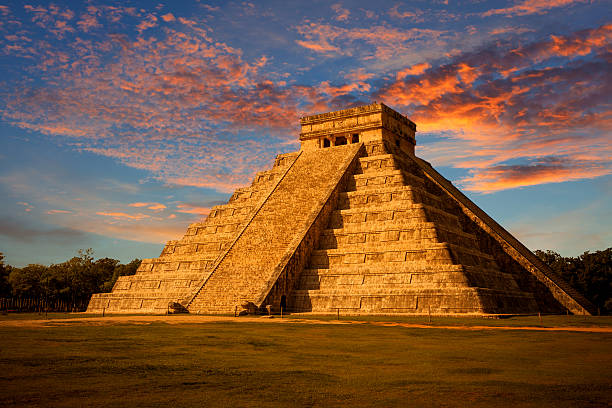
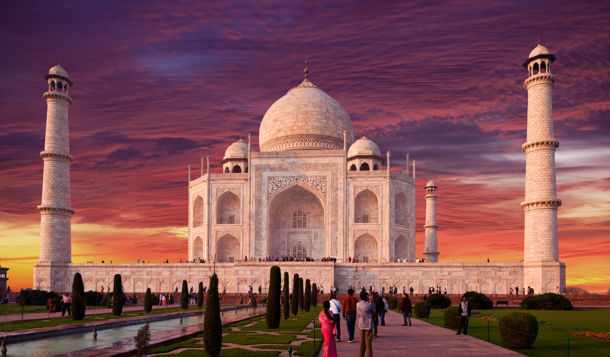

The Seven Wonders of the World are extraordinary monuments known for their incredible architecture, historical significance, and cultural value. These structures reflect the achievements of ancient civilizations and continue to inspire millions of people today.
1. The Great China Wall
Name: The Great China Wall
Country: China
History: The Great Wall was not built all at once. It was constructed over 2,300+ years, by different Chinese dynasties to protect the empire from invasions.
Description: The Great Wall of China is one of the world’s most iconic man-made structures. It stretches across mountains, deserts, valleys, and grasslands in northern China, covering thousands of kilometers. The wall was built using stone, bricks, tamped earth, and wood. From the top, it offers stunning views of the surrounding landscapes. The wall is not a single continuous barrier but a series of interconnected walls, fortresses, watchtowers, and natural defenses. Different dynasties built and rebuilt sections over centuries, each adding their own engineering style and materials. Many parts of the wall follow the natural terrain, making it blend beautifully into the mountains and surroundings.
Intro: One of the world’s largest man-made structures.
Highlights: 21,000+ km long, UNESCO Heritage Site
History summary: Built over several dynasties from the 7th century BCE to protect China from invasions.
2. Petra – Jordan
Petra, situated in southwest Jordan, is one of the world’s most magnificent archaeological sites. Founded by the Nabataean civilization, the city flourished as a major trade hub linking Arabia, Egypt, and the Mediterranean. Petra’s remarkable beauty lies in its rock-cut temples, tombs, and palaces, all carved into pink sandstone cliffs.
The iconic Treasury (Al-Khazneh) welcomes visitors at the end of a narrow gorge called the Siq, creating one of the most dramatic entrances in history.
Today, Petra stands as a UNESCO World Heritage Site and a symbol of Jordan’s rich cultural heritage.
Historical Background:
Built by the Nabataeans, an ancient Arab civilization, around 5th century BCE. The city flourished due to its location on the trade routes connecting Arabia, Egypt, and the Mediterranean.
Architecture:
Famous for structures carved directly into red sandstone cliffs. Most iconic building: Al-Khazneh (The Treasury).
Rise and Decline:
Became wealthy through trade in incense, spices, and textiles. +Declined after Romans annexed it in 106 CE and after several earthquakes. Lost to the world until rediscovered in 1812 by Swiss explorer Johann Burckhardt.
3. Machu Picchu – Peru
Name: Machu Picchu
Country: Machu Picchu is located in Peru.
Significance: Machu Picchu shows the engineering genius of the Inca Empire. It is one of the New Seven Wonders of the World (2007). It became a UNESCO World Heritage Site in 1983.
Description: Machu Picchu is an ancient Incan city located high in the Andes Mountains of Peru, about 2,430 meters (7,970 feet) above sea level. Surrounded by green peaks and clouds, it is one of the most breathtaking archaeological sites in the world. It is often called the “Lost City of the Incas” because it remained hidden from the outside world for centuries. The site is built entirely of stone, with temples, palaces, storage houses, and pathways beautifully carved from massive rocks. Its sophisticated design shows the incredible engineering and architectural skills of the Inca civilization. The location of Machu Picchu – perched on a mountain ridge – gives it a magical and mysterious appearance, attracting millions of visitors every year.
Intro: Lost city of the Inca Empire, built in 15th century.
Located high in Andes Mountains.
Highlights: Recognized globally for its beauty, architecture, and cultural importance.
Built in the 15th Century: Machu Picchu was constructed around 1450 CE by the Inca emperor Pachacuti.
It was used as a royal estate or religious site.
4. Christ the Redeemer – Brazil
Christ the Redeemer is a world-famous statue located in Rio de Janeiro, Brazil. Standing tall at 30 meters (98 ft) with open arms stretched 28 meters wide, it overlooks the entire city from the peak of Mount Corcovado.
Made of reinforced concrete and soapstone, the statue symbolizes peace, love, and protection. It is one of the most recognizable landmarks in the world and is also one of the New Seven Wonders of the World (2007).
Historical Background:
Idea first proposed in the 1850s but revived in 1920 by the Catholic Circle of Rio. Construction took place between 1922–1931.
Design & Construction:
Designed by Brazilian engineer Heitor da Silva Costa. Sculpted by French artist Paul Landowski. Built using reinforced concrete and soapstone tiles.
Symbolism:
Represents peace and Christianity. Overlooks Rio de Janeiro from Mount Corcovado at 30 meters (98 ft) tall.
Historical Significance:
Became a symbol of Brazilian identity and faith. Declared one of the New Seven Wonders in 2007.
5. Roman Colosseum
Name: Roman Colosseum
Country: Italy
Purpose: Hosted gladiator games, animal hunts, naval battles (naumachiae), public executions, and theatrical shows. A center for Roman public entertainment.
Description: The Roman Colosseum, also known as the Flavian Amphitheatre, is the largest ancient amphitheater ever built and one of the most iconic symbols of the Roman Empire. Located in the center of Rome, Italy, it could hold between 50,000 to 80,000 spectators.
Made of stone, concrete, and marble, the Colosseum features a complex system of arches, corridors, staircases, and underground chambers. Its oval structure measures 189 meters long, 156 meters wide, and 48 meters tall. The Colosseum had 80 entrances, allowing crowds to enter and exit quickly. Today, the Colosseum stands partially ruined due to earthquakes, fires, and stone theft, but it remains an architectural and historical masterpiece visited by millions every year.
Construction: Made of concrete, tuff, and travertine. Could hold 50,000–80,000 spectators.
Later History: Damaged by earthquakes and stone-looting in medieval times. Today, it stands as a symbol of ancient Rome.
Historical Background: Built between 70–80 CE under emperors Vespasian and Titus. Largest amphitheater ever built.
6. Chichén Itzá – Mexico

Chichén Itzá is one of the most famous ancient Maya cities located on the Yucatán Peninsula in Mexico. It is known for its extraordinary architecture, scientific knowledge, and religious importance. The site was a major political, economic, and cultural center between the 7th and 12th centuries. Chichén Itzá also features the Great Ball Court, the Temple of the Warriors, the Observatory (El Caracol), and the Sacred Cenote, which were all important for rituals, ceremonies, and scientific study.
Historical Background:
Built between 70–80 CE under emperors Vespasian and Titus. Largest amphitheater ever built.
Construction:
Made of concrete, tuff, and travertine. Could hold 50,000–80,000 spectators.
Purpose:
Hosted gladiator games, animal hunts, naval battles (naumachiae), public executions, and theatrical shows. A center for Roman public entertainment.
Later History:
Damaged by earthquakes and stone-looting in medieval times. Today, it stands as a symbol of ancient Rome.
7. Taj Mahal

Name: Taj Mahal
Country: India
Construction: Completed in 1653 with 20,000+ workers. Designed by Ustad Ahmad Lahauri. Made of white Makrana marble inlaid with precious stones.
Description: The Taj Mahal, located in Agra, India, is one of the world’s most admired architectural masterpieces. Built entirely from white marble, it was commissioned by the Mughal Emperor Shah Jahan in 1632 in memory of his beloved wife Mumtaz Mahal. The monument is a symbol of eternal love, beauty, and artistic excellence. The Taj Mahal stands on the banks of the Yamuna River and features a large central dome, four elegant minarets, intricate carvings, and precious stone inlay work. The monument is surrounded by beautifully designed Mughal gardens, fountains, and pathways that create a peaceful and royal atmosphere. Millions of visitors travel every year to witness its breathtaking beauty.
Symbolism: Widely regarded as the greatest symbol of love and Mughal artistry.
Architecture: Combines Persian, Islamic, and Indian styles. Includes a main dome, four minarets, reflecting pools, and a vast garden.
History: Commissioned by Mughal Emperor Shah Jahan in 1632. Built as a mausoleum for his wife Mumtaz Mahal, who died in childbirth.